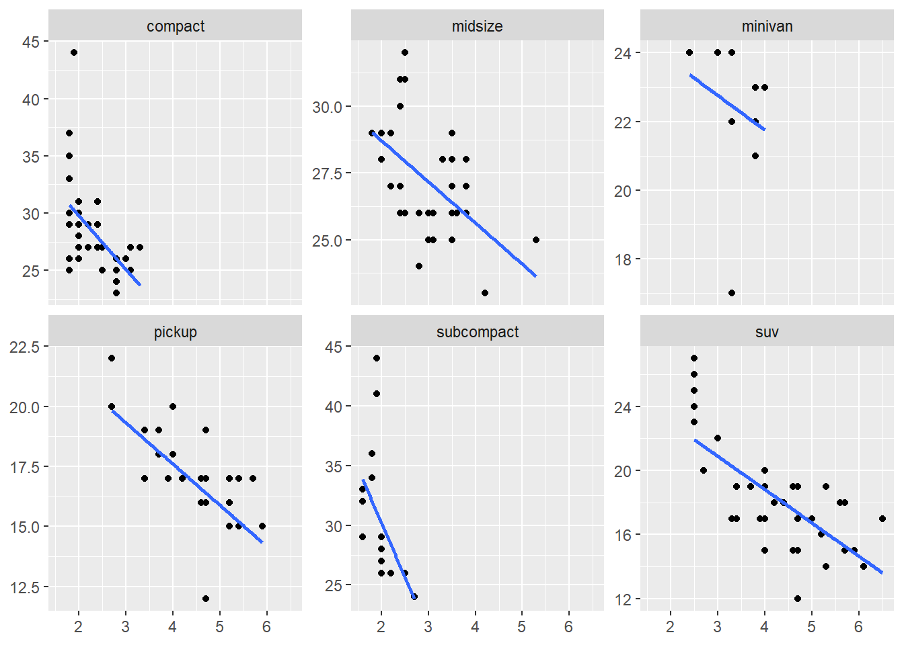

library(ggplot2)
library(dplyr)Facet Plots
facet_wrap and facet_grid
In this tutorial we will learn Faceting in ggplot2
ggplot(mpg, aes(x=displ, y=hwy, color = class)) +
geom_point() +
geom_smooth(method = "lm", se=FALSE)We will use only a subset of the mpg data set as used in chapter 7 because it’s easy for the demo. We will remove cars with 5 cylinders (only 4 observations) and class 2seater (5 observations). We will also remove cars with rear wheel drive (25 observations)
mpg %>% count(cyl)# A tibble: 4 × 2
cyl n
<int> <int>
1 4 81
2 5 4
3 6 79
4 8 70mpg %>% count(drv)# A tibble: 3 × 2
drv n
<chr> <int>
1 4 103
2 f 106
3 r 25mpg %>% count(class)# A tibble: 7 × 2
class n
<chr> <int>
1 2seater 5
2 compact 47
3 midsize 41
4 minivan 11
5 pickup 33
6 subcompact 35
7 suv 62mpg2 = mpg %>%
filter(cyl != 5 & drv %in% c("4", "f") & class != "2seater")##facet_wrap
Let’s start with facet_wrap. It simply wraps facets along horizontal or vertical direction
ggplot(mpg2, aes(displ, hwy)) +
geom_blank() +
labs(x = NULL, y = NULL)ggplot(mpg2, aes(displ, hwy)) +
geom_blank() +
labs(x = NULL, y = NULL)+
facet_wrap(~class)A few things to note here for the default behavior. 1. class labels are organized alphabetically 2. class labels go from left to right 3. class labels start from the top row
All these are changeable if you want. You can change the ordering of the faceting variable by re-leveling the factor variable.
ggplot(mpg2, aes(displ, hwy)) +
geom_blank() +
labs(x = NULL, y = NULL) +
facet_wrap(~relevel(as.factor(mpg2$class), ref = "suv"))ggplot(mpg2, aes(displ, hwy)) +
geom_blank() +
labs(x = NULL, y = NULL) +
facet_wrap(~factor(mpg2$class,
levels = c("suv", "subcompact", "midsize",
"pickup", "compact", "minivan")))You can change the way the facets are wrapped by changing dir option.
ggplot(mpg2, aes(displ, hwy)) +
geom_blank() +
labs(x = NULL, y = NULL) +
facet_wrap(~class, nrow = 2, dir = "v")Finally, you can control where the facets start showing using as.table option, which by default is TRUE
ggplot(mpg2, aes(displ, hwy)) +
geom_blank() +
labs(x = NULL, y = NULL) +
facet_wrap(~ class, as.table = FALSE)facet_grid
facet_grid differs from facet_wrap in that it can create grids with two variables. Thus, unlike facet_wrap it’s truly 2-D.
ggplot(mpg2, aes(displ, hwy)) +
geom_blank() +
labs(x = NULL, y = NULL) +
facet_grid(.~class)As you can see, facet_grid doesn’t automatically create multiple rows. This is because we have not given it a second dimension.
Before, we move into the 2-D plotting, study the following code and note the difference
ggplot(mpg2, aes(displ, hwy)) +
geom_blank() +
labs(x = NULL, y = NULL) +
facet_grid(class~.)How to get a 2-D graph?
Now, let’s get a 2-D graph where we want the facets laid down by drv and class
ggplot(mpg2, aes(displ, hwy)) +
geom_blank() +
labs(x = NULL, y = NULL) +
facet_grid(drv ~ class)Changing strips and panels in facet_wrap and facet_grid
ggplot(mpg2, aes(displ, hwy)) +
geom_point() +
facet_wrap(~class) +
theme(strip.background = element_blank()) +
theme(strip.text = element_text(family = "Times")) +
theme(panel.spacing.x = unit(1,"cm"),
panel.spacing.y = unit(1.5,"cm"))Warning in grid.Call(C_stringMetric, as.graphicsAnnot(x$label)): font family
not found in Windows font databaseWarning in grid.Call.graphics(C_text, as.graphicsAnnot(x$label), x$x, x$y, :
font family not found in Windows font databaseChanging scales
Let’s look into more advanced functionality. Start by plotting points on the graph.
ggplot(mpg2, aes(displ, hwy)) +
geom_point() +
geom_smooth(method = "lm") +
labs(x = NULL, y = NULL) +
facet_wrap(~class)`geom_smooth()` using formula = 'y ~ x'If you are using this panel for helping with your modeling, there is nothing much you need to do here. Perhaps you could superimpose a regression line but that’s about it. There are cases where you don’t want to make comparisons and just study each panel standalone. In that case you can change the scales so that they become free.
ggplot(mpg2, aes(displ, hwy)) +
geom_point() +
geom_smooth(method = "lm") +
labs(x = NULL, y = NULL) +
facet_wrap(~class, scales = "free")`geom_smooth()` using formula = 'y ~ x'Note that now comparisons across the panels are not meaningful because the scales have changed. You can also control for the scale only on x or y axis using scales = "free_x and scales = "free_y options respectively.
ggplot(mpg2, aes(displ, hwy)) +
geom_point() +
labs(x = NULL, y = NULL) +
facet_wrap(~class, scales = "free_y")Why across panels comparison becomes meaningless with free scales?
In order to answer this question, let’s plot regression lines on the scatterplots. First consider no free scales and then free y scale and free x scale.
ggplot(mpg2, aes(displ, hwy)) +
geom_point() +
geom_smooth(method = "lm", se = FALSE) +
labs(x = NULL, y = NULL) +
facet_wrap(~class, scales = "fixed")`geom_smooth()` using formula = 'y ~ x'ggplot(mpg2, aes(displ, hwy)) +
geom_point() +
geom_smooth(method = "lm", se = FALSE) +
labs(x = NULL, y = NULL) +
facet_wrap(~class, scales = "free_y")`geom_smooth()` using formula = 'y ~ x'
ggplot(mpg2, aes(displ, hwy)) +
geom_point() +
geom_smooth(method = "lm", se = FALSE) +
labs(x = NULL, y = NULL) +
facet_wrap(~class, scales = "free_x")`geom_smooth()` using formula = 'y ~ x'
Clearly the latter two graphs are misleading in case you are comparing the slopes of the lines across the panels!
Using layers in facets
This example shows an awesome application from Chapter 7. You may have come across these types of plots in the past.
In the following code, we are generating a data frame with 3 variables. Note that rnorm() function has a vector for means. This will generate a variable with a mixture of 3 normal distributions.
set.seed(345908)
df <- data.frame(x = rnorm(120, c(0, 2, 4)),
y = rnorm(120, c(1, 2, 1)),
z = letters[1:3])Now, let’s plot the points
ggplot(df, aes(x, y)) +
geom_point(aes(color = z),size = 3) +
theme_bw()+
facet_wrap(~z)Next, we will superimpose the distribution of all the points on top of each panel. For this, we will create a second data frame which has no z variable.
df2 <- dplyr::select(df, -z)
ggplot(df, aes(x, y)) +
geom_point(data = df2, colour = "grey70", size = 3) +
geom_point(aes(fill = z), size = 3, shape = 21) +
theme_bw() +
facet_wrap(~z)What if you want to change the default colors of the points?
For that let’s create a palette that we want to use.
mycolors <- c("#e7298a","#ff7f00","#7570b3")ggplot(df, aes(x, y)) +
geom_point(data = df2, colour = "grey70", size = 3) +
geom_point(aes(fill = z), size = 3, shape = 21) +
theme_bw() +
scale_fill_manual(values = mycolors) +
facet_wrap(~z)Exercises
Diamonds: display the distribution of
priceconditional oncutandcarat. Try faceting bycutand grouping bycarat. Try faceting bycaratand grouping bycut. Which do you prefer?Create a scatterplot with
displon the X axis andhwyon the Y axis. It facetsmpg2byclass. Overlay a smooth curve fit to the full dataset on each facet.